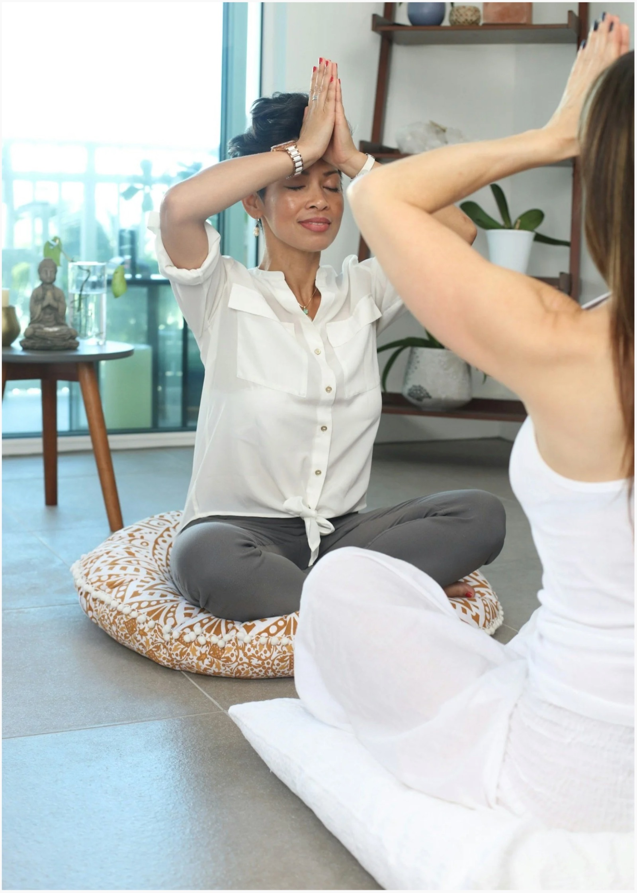

I'm dedicated to guiding students through a practice that is both grounded and transformative.
My teaching is deeply rooted in the foundations of the yoga tradition, ensuring every session honours the historical and philosophical essence of the practice. Based in Chiswick (W4), I teach in person across West London and live online, creating a space where you can cultivate strength, clarity and balance, not just on the mat, but in all areas of your daily life.
My own journey with yoga began at a time when I truly needed it, and it profoundly changed my life. That experience fuels my dedication to sharing its benefits, in my classes I emphasise kindness, mindfulness and the pure joy of movement, encouraging students to release self-judgment and embrace their unique embodiment.
Join me in discovering the unity of mind, body and spirit through yoga.
Practise with me
The breath is the link between your mind and your body, the seen and the unseen.The great constant of your life
Yoga is more than asanas.
The asanas are only a small part. The Patanjali Yoga Sutras describe eight limbs, a holistic roadmap for living with intention, moving beyond the mat toward inner peace, ethical integrity and mental clarity.
Yama
How we treat the world, ahimsa, satya, asteya, brahmacharya, aparigraha.
Niyama
How we treat ourselves, saucha, santosha, tapas, svadhyaya, ishvara pranidhana.
Asana
The physical practice, making the body strong and supple so we can live well within it.
Pranayama
Working with the breath, the link between the mind and the body, the seen and unseen.
Pratyahara
Drawing the senses inward, becoming free from the pull of constant desire.
Dharana
Single-pointed focus, gathering a scattered mind toward one steady place.
Dhyana
Sustained, effortless attention, being fully with what is present, moment to moment.
Samadhi
Complete absorption, the quiet unity of mind, body and spirit the practice moves toward.
In meditation we sit still and become curious about what's present, watching thoughts and emotions move through, noticing the body's sensations and energy. You have thoughts, but you are not your thoughts. You have emotions, but you are not your emotions.

Your retreat to fully relax and reset.
Days of nervous-system reset and rejuvenation for all levels, from dynamic power yoga to the calmest space of Yin and meditation, in your daily retreat with us at Terra Raíz in Alcobaça, near the Serra de Aire and Nazaré, Portugal.
Discover the retreatFrom the mat
"Sonia's classes have transformed my practice. Her approach is both fun and deeply grounding."
Emily · Holland Park"Every session with Sonia leaves me feeling rejuvenated and at peace. I can't recommend her enough."
Lucy · Acton"I was fortunate to experience Sonia's flow yoga, yin and meditation sessions, which had a lasting impact on me. Her passion and great energy paved the way for my sustained interest in yoga, and even more profoundly the journey for healing. Our entire class felt renewed after just one session."
Max Santa Maria · London"Sonia's gentle approach and deep understanding of yoga have made a huge difference in my life. Her classes are the perfect blend of challenge and relaxation."
Anna · Chiswick